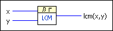
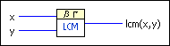

Lcm VI
Owning Palette: Discrete Math VIs
Requires: Full Development System
Computes the least common multiple of the input values.

 Add to the block diagram Add to the block diagram |
 Find on the palette Find on the palette |
Owning Palette: Discrete Math VIs
Requires: Full Development System
Computes the least common multiple of the input values.

| Add to the block diagram |
Find on the palette |
 |
x is an integer. |
|
y is an integer. |
| lcm(x,y) returns the least common multiple of x and y. |
lcm(x,y) is the smallest integer m for which there exist integers c and d such that
x × c = y × d = m
To compute lcm(x,y), consider the prime factorizations of x and y:
x = Πi piai
y = Πi pibi
where pi are all the prime factors of x and y. If pi does not occur in a factorization, the corresponding exponent is 0. lcm(x,y) then is given by:
lcm(x,y) = Πi pimax(ai, bi)
For example, the prime factorizations of 12 and 30 are given by:
12 = 22 × 31 × 50
30 = 21 × 31 × 51
so
lcm(12,30) = 22 × 31 × 51 = 60